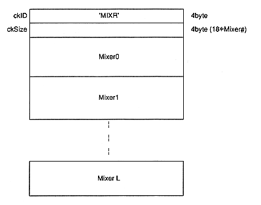
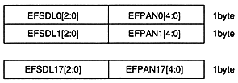

This data exists for 16 channels of mixer, and it becomes MixerChunk together with the header. The header ID 'MIXR' is 4 bytes in ASCII code, followed by 4 bytes of mixer data. With this change, we have multiple mixers.

Bits 0 to 4 are PAN data, and 5 to 7 are SendReturn. This configuration is the same as the SCSP register, and slot 10 corresponds to 100017H.